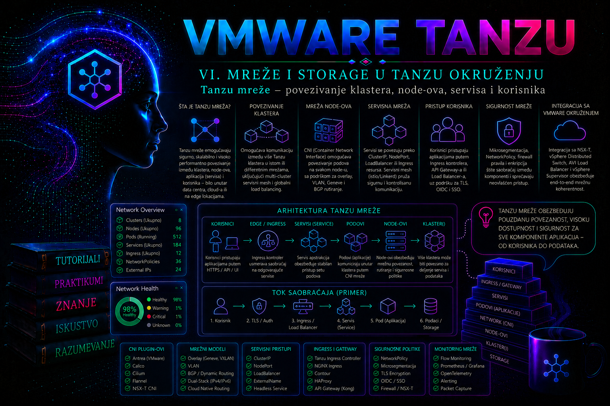

VMware & Tanzu

Mreža u VMware Tanzu okruženju nije samo transport između virtuelnih mašina. Ona istovremeno povezuje administratorske radne stanice sa Kubernetes API serverom, control plane sa radnim node-ovima, podove međusobno, aplikacije sa internim servisima, klaster sa infrastrukturnim sistemima i krajnje korisnike sa objavljenim aplikacijama. Zbog toga mrežni problem u Tanzu okruženju može izgledati kao kvar aplikacije, DNS-a, Kubernetes kontrolera, load balancera, NSX segmenta, vSphere port grupe, fizičkog rutera ili bezbednosnog pravila. Administrator mora da posmatra ceo put paketa, a ne samo objekat koji trenutno prijavljuje grešku.
Savremena VMware platforma može pružati Kubernetes kroz vSphere Supervisor i vSphere Kubernetes Service, koji se u novijoj dokumentaciji i izdanjima VMware Cloud Foundation pojavljuje pod skraćenicom VKS. U ranijim implementacijama mogu se sresti nazivi vSphere with Tanzu, Tanzu Kubernetes Grid Service, TKG Service i Tanzu Kubernetes Cluster. Samostalni Tanzu Kubernetes Grid 2.x i Tanzu Kubernetes Grid Integrated Edition predstavljaju drugačije modele implementacije i ne treba njihove mrežne postupke automatski prenositi na Supervisor okruženje. Konkretne mogućnosti zavise od verzije VMware Cloud Foundation ili vSphere platforme, izabranog mrežnog steka, CNI dodatka, load balancer integracije i licence.
Mrežni slojevi Tanzu okruženja
Produkciona Tanzu mreža sastoji se od više međuzavisnih slojeva. Najniži sloj čine fizički switch-evi, ruteri, VLAN-ovi, MTU konfiguracija i uplink veze ESXi hostova. Iznad njega nalazi se vSphere Distributed Switch ili NSX mrežni sloj, zatim mrežni adapteri Kubernetes virtuelnih mašina, CNI mreža podova, virtuelne adrese servisa i mehanizam kojim se aplikacije objavljuju korisnicima. Kubernetes upravlja željenim stanjem mrežnih objekata, ali ne zamenjuje osnovnu infrastrukturu koja mora da obezbedi povezivost.
| Sloj | Tipični objekti | Administratorska odgovornost | Tipičan simptom problema |
|---|---|---|---|
| Fizička i vSphere mreža | VLAN, uplink, VDS, port grupa, vmkernel adapter | Redundantnost, MTU, VLAN dozvole, routing i dostupnost gateway-a | Node nije dostupan, povremeni gubitak paketa ili veliki broj retransmisija |
| Supervisor ili klasterska mreža | Control plane adrese, node mreža, API endpoint | Planiranje opsega, DNS-a, NTP-a, firewall pravila i load balancera | kubectl ne može da pristupi API serveru ili se node ne registruje |
| Pod mreža | Pod CIDR, CNI interfejsi, overlay ili rutabilne pod adrese | Neponavljanje opsega, ispravan CNI i dovoljan broj adresa | Podovi rade na istom node-u, ali ne komuniciraju između node-ova |
| Service mreža | ClusterIP, EndpointSlice, kube-proxy ili odgovarajući dataplane | Planiranje Service CIDR-a i validacija backend endpoint-a | Direktan pristup podu radi, ali pristup Service adresi ne radi |
| Objavljivanje aplikacija | LoadBalancer Service, Ingress, Gateway API, virtual service | VIP opseg, DNS, TLS, health monitori i firewall | Servis radi unutar klastera, ali nije dostupan korisnicima |
| Bezbednosna segmentacija | NetworkPolicy, NSX pravila, distribuirani firewall | Minimalno potrebni tokovi, audit i kontrola promena | Selektivno odbijanje konekcije između određenih workload-a |
Podržani mrežni modeli i verzijske granice
Izbor mrežnog modela pripada dizajnu Supervisor-a i ne svodi se na kasniju promenu nekoliko Kubernetes objekata. U vSphere 8 okruženjima najčešće se sreću Supervisor sa NSX networking-om i Supervisor sa vSphere Distributed Switch (VDS) networking-om uz podržani load balancer. U VMware Cloud Foundation 9 dokumentaciji pojavljuju se tri odvojena Supervisor mrežna steka, a VCF Networking sa Virtual Private Cloud (VPC) modelom predstavlja preporučeni workload mrežni pristup za nove odgovarajuće implementacije. Postojeće NSX i VDS arhitekture time ne postaju automatski nevažeće: njihova podrška, mogućnosti i put nadogradnje proveravaju se za tačan VCF/vCenter/ESXi/NSX build i izabranu topologiju zona.
| Model | Gde se tipično sreće | Mrežne karakteristike | Važna posledica dizajna |
|---|---|---|---|
| NSX networking | vSphere 8 i VCF implementacije sa NSX integracijom | NSX segmenti, gateway-i, distribuirani routing/firewall i infrastrukturne integracije | Transportne zone, edge kapacitet, MTU, T0/T1 ili odgovarajući gateway model i pravila postaju deo Kubernetes puta paketa. |
| VDS networking | Supervisor implementacije zasnovane na vSphere Distributed Switch-u | VLAN-backed port grupe i eksterni podržani load balancer; manje mrežnih funkcija je realizovano samim NSX dataplane-om | Fizički routing, VLAN dozvole, adresni pool-ovi i load balancer integracija moraju biti unapred obezbeđeni; namespace nije sam po sebi mikrosegmentaciona granica. |
| VCF Networking sa VPC | VCF 9.x, kada ga konkretno izdanje i dizajn podržavaju | VPC-orijentisana izolacija i self-service mreže za Supervisor workload-e | Ne treba prenositi nazive polja, postupke i pretpostavke iz vSphere 8 čarobnjaka; koristi se dokumentacija za tačno VCF izdanje. |
CNI unutar VKS klastera i mrežni stek Supervisor-a nisu ista komponenta. Supervisor obezbeđuje infrastrukturnu povezanost i lifecycle VKS virtuelnih mašina, dok CNI u svakom VKS klasteru realizuje pod mrežu i, kada je podržano, NetworkPolicy. Naziv i podrazumevani CNI zavise od Kubernetes release-a i VKS cluster class/plan konfiguracije; zato se stvarno stanje utvrđuje iz deklaracije klastera, instaliranih sistemskih workload-a i zvanične release dokumentacije, a ne iz pretpostavke da svaki klaster koristi Antrea ili drugi konkretan dodatak.
Segmenti, virtuelni interfejsi i put paketa
Na Supervisor i VKS virtuelnim mašinama operativni sistem vidi virtuelne NIC-ove povezane na vSphere ili NSX mreže. Unutar VKS node-a CNI zatim kreira dodatne interfejse, virtual Ethernet parove, bridge, tunnel ili routing stanje prema svojoj implementaciji. Nazivi kao eth0, antrea-gw0, cali* ili genev_sys_* nisu prenosiv ugovor između proizvoda i verzija. Administrator ih sme koristiti kao dokaz tek kada je identifikovao CNI i podržani troubleshooting postupak za konkretan klaster; ručno brisanje interfejsa, ruta ili dataplane pravila na upravljanom node-u nije prihvatljiva korekcija.
| Tok | Logički put | Adrese koje treba pratiti | Dokaz funkcionalnosti |
|---|---|---|---|
| Administrator → API | radna stanica/VPN → DNS → API VIP ili endpoint → aktivni API server | izvor klijenta, DNS odgovor, API endpoint i backend control plane adrese | TLS veza, odgovarajući sertifikat i autorizovan kubectl zahtev; ping nije dovoljan. |
| VKS node → Supervisor/infrastruktura | VM NIC → port grupa ili NSX segment → gateway/firewall → API, DNS, NTP, registry | node IP, gateway, SNAT ako postoji i odredišna adresa | node ostaje Ready, images se preuzimaju i vreme/DNS su stabilni. |
| Pod → pod na drugom node-u | pod interfejs → CNI dataplane → node transport → udaljeni CNI → odredišni pod | obe pod IP adrese, node IP adrese i eventualni tunnel endpoint-i | test tačnog protokola i veličine paketa sa podovima namerno raspoređenim na različite node-ove. |
| Pod → ClusterIP Service | DNS → ClusterIP → service proxy/dataplane → spremni EndpointSlice backend | ClusterIP, service port, endpoint IP i target port | ime i IP rade, EndpointSlice je spreman, a odgovor stiže sa očekivanog backend-a. |
| Korisnik → LoadBalancer Service | korporativni DNS → VIP → virtual service/health monitor → node ili pod dataplane → endpoint | korisnički izvor, VIP, SNAT izvor ako postoji, backend i pod IP | test spolja i iznutra, zdrav backend pool i korelisani LB/Kubernetes događaji. |
| Pod → spoljna destinacija | pod → CNI egress → node/gateway → SNAT/firewall → odredište | pod IP, prevedena izvorna adresa, ruta i odredišni IP/port | DNS i TCP/TLS test uz potvrdu egress politike i povratne rute. |
Osnovni Kubernetes mrežni model polazi od toga da svaki pod dobija sopstvenu IP adresu, da podovi mogu da komuniciraju bez ručnog NAT-a između njih i da node može da komunicira sa podovima. Implementaciju tog modela obezbeđuje CNI dodatak i infrastrukturni mrežni sloj. Administrator zato ne sme pretpostaviti da sama činjenica da je pod u stanju Running potvrđuje ispravnost mreže. Kontejnerski proces može raditi dok CNI interfejs, ruta, DNS ili NetworkPolicy sprečavaju funkcionalnu komunikaciju.
Adresni plan i razdvajanje mrežnih opsega
Pre implementacije klastera moraju se planirati najmanje upravljačka mreža, mreža node-ova, Pod CIDR, Service CIDR i opseg virtuelnih IP adresa za load balancer. U NSX okruženju mogu postojati dodatni segmenti, tier gateway-i, VPC mreže, SNAT adrese i odvojeni opsezi za Supervisor i njegove workload-e. Nazivi i način konfigurisanja razlikuju se između verzija, ali osnovno pravilo ostaje isto: nijedan opseg ne sme se preklapati sa drugim klasterskim opsegom, korporativnim mrežama, VPN adresama ili rutama sa kojima workload mora da komunicira.
Preklapanje adresa često ne izaziva trenutni potpuni prekid. Sistem može raditi za deo destinacija, dok paketi namenjeni udaljenoj mreži završavaju u lokalnoj pod ili service ruti. Takvi problemi su teški za dijagnostiku jer DNS radi, aplikacija šalje zahtev, ali povratni saobraćaj odlazi pogrešnim putem. Adresni plan zato mora biti deo infrastrukturne dokumentacije i procesa odobravanja, a ne proizvoljna vrednost unesena tokom čarobnjaka za instalaciju.
Service CIDR se koristi za virtuelne adrese Kubernetes servisa i obično nije direktno rutabilan izvan klastera. Pod CIDR služi za adrese podova, a način njegove dostupnosti zavisi od implementacije. VIP opseg mora biti dostupan komponenti koja realizuje Service tipa LoadBalancer i mora biti rutiran ili oglašen mreži korisnika. Dodeljivanje VIP adrese samo po sebi ne dokazuje da do nje postoji ispravan put.
Pre odobravanja adresnog plana administrator proverava:
- da se upravljački, node, pod, service i VIP opsezi međusobno ne preklapaju;
- da se opsezi ne preklapaju sa data centrom, udaljenim lokacijama, cloud mrežama i korisničkim VPN pool-ovima;
- da postoji dovoljan broj adresa za planirani broj node-ova, podova, servisa i buduće proširenje;
- da su gateway, DNS, NTP i potrebne izlazne destinacije dostupni iz odgovarajućih segmenata;
- da je dokumentovano ko upravlja rutama, firewall pravilima, VIP pool-om i javnim ili internim DNS zonama.
Povezivanje control plane-a i radnih node-ova
Kubernetes API server predstavlja centralnu upravljačku tačku klastera. Administratori, automatizacioni sistemi, kubelet procesi i kontroleri moraju da mu pristupaju preko stabilnog endpoint-a. U klasteru sa više control plane node-ova taj endpoint se obično realizuje virtuelnom IP adresom iza load balancera. Load balancer ne zamenjuje Kubernetes control plane; on raspoređuje TCP konekcije ka zdravim API server instancama i uklanja nedostupne instance iz aktivnog skupa.
Radni node mora da razreši DNS imena, pristupi API endpoint-u, preuzme images iz registra, komunicira sa infrastrukturnim servisima i uspostavi mrežni put prema drugim node-ovima. Firewall koji dozvoljava samo administratorski pristup API serveru, ali ne i komunikaciju node-ova sa control plane-om, proizvodi klaster u kojem se node pojavljuje kao NotReady ili prestaje da šalje status. Potrebne portove i smerove treba uzeti iz dokumentacije za tačno izdanje platforme i CNI dodatka; generička lista portova nije dovoljna za svaku Tanzu arhitekturu.
Status Ready potvrđuje da kubelet trenutno zadovoljava osnovne uslove, ali administrator treba da proveri i uslove NetworkUnavailable, pritisak na resurse i događaje node-a. Povremeni prelazak u NotReady može ukazivati na gubitak API konekcije, problem sa vSphere mrežnim adapterom, CNI procesom, DNS-om ili preopterećenjem node-a.
kubectl get nodes -o wide
kubectl describe node prod-tkg-01-worker-01
kubectl get events -A --sort-by=.metadata.creationTimestamp
U izlazu treba proveriti internu IP adresu node-a, Kubernetes verziju, stanje Ready, poslednje heartbeat vreme i događaje koji pominju kubelet, CNI ili nedostupan API server. Jednokratni stari događaj nije isto što i aktivna greška; vreme nastanka i broj ponavljanja moraju se posmatrati zajedno.
Pod mreža, CNI i komunikacija između node-ova
CNI dodatak kreira mrežni interfejs podova, dodeljuje IP adrese i uspostavlja pravila potrebna za komunikaciju. VMware Tanzu implementacije mogu koristiti različite mrežne komponente u zavisnosti od proizvoda i verzije. Zbog toga se CNI ne menja proizvoljno na postojećem produkcionom klasteru. Promena može zahtevati ponovno kreiranje klastera ili posebno podržan postupak migracije.
Kada pod ostane u stanju ContainerCreating, administrator proverava događaje. Poruke poput FailedCreatePodSandBox, neuspešnog poziva CNI dodatka ili nemogućnosti dodele IP adrese ukazuju da kontejner još nije dobio funkcionalan mrežni sandbox. Restart aplikacije tada nije rešenje; potrebno je proveriti CNI komponente, raspoloživost adresnog pool-a i stanje node-a.
kubectl get pods -A -o wide
kubectl describe pod <IME_PODA> -n <NAMESPACE>
kubectl get pods -A | grep -Ei 'cni|antrea|calico|cilium|nsx'
kubectl logs -n <SISTEMSKI_NAMESPACE> <CNI_POD> --since=15mNaziv CNI komponenti i njihov namespace moraju se prvo utvrditi u konkretnom klasteru. Ne treba pretpostavljati da svaka Tanzu implementacija koristi isti dodatak. Ako komunikacija radi između podova na istom node-u, ali ne i između različitih node-ova, sumnja se usmerava na overlay tunel, fizičku fabric mrežu, MTU, firewall između node-ova ili CNI agent na jednom od njih.
Neusklađen MTU je posebno opasan jer mali paketi mogu prolaziti, dok veći zahtevi, TLS sesije ili prenos images-a otkazuju. Administrator tada ne zaključuje da je aplikacija neispravna samo zato što TCP konekcija ponekad može da se uspostavi. Potrebno je uporediti MTU na fizičkoj mreži, VDS-u, NSX transportnoj zoni, VM interfejsu i CNI overlay-u prema podržanom dizajnu proizvođača.
Kubernetes Service i stabilan pristup aplikaciji
Podovi su potrošni objekti. Njihove IP adrese se menjaju pri ponovnom kreiranju, skaliranju i raspoređivanju na drugi node. Kubernetes Service obezbeđuje stabilan naziv i virtuelnu adresu ispred skupa podova izabranih label selector-om. Najčešći tip je ClusterIP, namenjen komunikaciji unutar klastera.
Service ne proverava poslovnu ispravnost aplikacije sam po sebi. On prosleđuje saobraćaj ka endpoint-ima koji odgovaraju selector-u i stanju spremnosti podova. Ako selector ne odgovara labelama podova, Service postoji, dobija ClusterIP i može se uspešno razrešiti kroz DNS, ali nema backend endpoint-e. To je česta konfiguraciona greška koja izgleda kao mrežni kvar.
kubectl get service -n payments
kubectl describe service payments-web -n payments
kubectl get endpointslice -n payments -l kubernetes.io/service-name=payments-web
kubectl get pods -n payments --show-labelsEndpointSlice objekti treba da sadrže IP adrese spremnih podova i očekivani port. Prazan skup obično znači pogrešne labele, neuspešan readiness probe ili odsustvo podova. Ako endpoint postoji, direktan pristup pod IP adresi radi, a ClusterIP ne radi, proveravaju se service dataplane, kube-proxy ili odgovarajuća zamenska komponenta.
NodePort otvara port na node-ovima i uglavnom se koristi kao infrastrukturni mehanizam ili za ograničene testove. Direktno izlaganje produkcione aplikacije korisnicima kroz nasumično dodeljen NodePort obično nije poželjan dizajn zbog upravljanja firewall pravilima, TLS-om, dostupnošću i praćenjem saobraćaja. LoadBalancer zahteva integrisanog provajdera koji može da kreira ili rezerviše virtuelnu adresu i usmeri saobraćaj ka servisu.
DNS, objavljivanje servisa i pristup korisnika
Klaster DNS kreira imena za Kubernetes servise. Pod u istom namespace-u može pristupiti servisu kratkim imenom, na primer payments-web, dok je potpuno ime oblika payments-web.payments.svc.cluster.local u tipičnoj konfiguraciji domena klastera. Stvarni cluster domain može biti drugačiji i treba ga proveriti.
DNS problem treba razdvojiti od problema transporta. Ako nslookup ne vraća adresu, proveravaju se DNS Service, CoreDNS podovi, konfiguracija podovog /etc/resolv.conf fajla i NetworkPolicy pravila. Ako se ime razrešava, ali TCP konekcija ne uspeva, istraga se nastavlja na Service, endpoint-e, portove i politike.
kubectl get service -n kube-system
kubectl get pods -n kube-system -l k8s-app=kube-dns
kubectl logs -n kube-system -l k8s-app=kube-dns --since=15m
kubectl exec -n payments <POD> -- cat /etc/resolv.conf
Za pristup korisnika aplikacija se može objaviti Service objektom tipa LoadBalancer, Ingress resursom ili Gateway API resursima, u zavisnosti od instaliranih kontrolera i podržane platforme. Kreiranje Ingress objekta bez Ingress kontrolera ne objavljuje aplikaciju. Kubernetes API prihvata objekat, ali nijedna komponenta ne realizuje pravila.
U Tanzu okruženjima load balancing mogu realizovati NSX Advanced Load Balancer, NSX komponente ili drugi podržani provajderi. Administrator mora da zna ko upravlja VIP pool-om, kojim mrežama su Service Engine ili odgovarajuće dataplane komponente povezani, kako se proverava health monitor i ko održava DNS zapis. Stanje EXTERNAL-IP: <pending> duže od očekivanog obično znači da provider nije dostupan, nema slobodnih VIP adresa, nema prava, ne može da kreira virtual service ili ne može da pronađe odgovarajuću mrežu.
Mrežna segmentacija i NetworkPolicy
Kubernetes podovi su podrazumevano neizolovani ako nijedna NetworkPolicy politika ne bira te podove. Sama definicija namespace-a ne predstavlja mrežnu bezbednosnu granicu. Za produkcione workload-e preporučuje se eksplicitno definisanje dozvoljenih tokova, ali samo kada instalirani CNI podržava i zaista sprovodi NetworkPolicy. API može prihvatiti politiku čak i kada je dataplane ne primenjuje.
Politika se primenjuje na izabrane podove i smerove Ingress i Egress. Kada pod postane izolovan u jednom smeru, dozvoljen je samo saobraćaj koji odgovara dozvolama relevantnih pravila. Više politika se sabira; jedna politika ne poništava dozvolu koju daje druga. Administrator zato analizira sve politike koje biraju pod, a ne samo poslednju izmenjenu.
Primena default-deny egress pravila bez eksplicitne dozvole za DNS često prekida razrešavanje imena. Aplikacija zatim prijavljuje da baza, API ili registar nije dostupan, iako su odredišni sistemi zdravi. Bezbedna implementacija uvodi politiku u testnom namespace-u, potvrđuje DNS i zavisnosti, a zatim je primenjuje u produkciji kroz kontrolisanu promenu.
Integrisani praktikum: objavljivanje i segmentacija aplikacije payments-web
Poslovni kontekst. Interna aplikacija za pregled statusa plaćanja treba da bude dostupna korisnicima preko virtuelne IP adrese, dok direktan pristup aplikacionim podovima iz drugih namespace-ova mora biti zabranjen. Frontend se izvršava u VKS klasteru prod-tkg-01. Organizacija koristi podržanu integraciju za Service tipa LoadBalancer, a mrežni tim je rezervisao VIP pool iz kojeg se adrese dodeljuju automatski.
Cilj. Implementirati dve replike aplikacije payments-web, interni ClusterIP servis, spoljašnji LoadBalancer servis i NetworkPolicy pravila koja dozvoljavaju pristup aplikacionom portu samo kroz namespace payments, uz očuvanu DNS funkcionalnost. Praktikum koristi jednostavan HTTP server za proveru mrežnog puta; u produkciji bi image prošao sigurnosno skeniranje i bio smešten u odobrenom privatnom registru.
Referentno okruženje. Klaster je dostupan aktivnim kontekstom prod-tkg-01-admin. Aplikacioni namespace je payments, testni namespace je network-test, Deployment se zove payments-web, interni Service payments-web, a spoljašnji Service payments-web-lb. Manifesti se čuvaju u direktorijumu ~/tanzu-labs/lesson-26.
Preduslovi i prava. Administrator mora imati pravo da čita node-ove i sistemske mrežne objekte i da u namespace-ovima payments i network-test kreira Deployment, Pod, Service i NetworkPolicy objekte. Za ovaj scenario nisu potrebne cluster-admin privilegije ako su namespace-i unapred delegirani. Potrebni su funkcionalan CNI sa NetworkPolicy podrškom, klasterski DNS, slobodan VIP i mrežni put korisnika do VIP mreže.
-
Potvrda identiteta, konteksta i osnovnog zdravlja klastera.
Pre promene se proverava da komande neće biti izvršene u pogrešnom klasteru i da svi node-ovi imaju stanje
Ready.
Validacija: aktivni kontekst mora bitikubectl config current-context kubectl config get-contexts kubectl auth can-i create deployments.apps -n payments kubectl auth can-i create services -n payments kubectl auth can-i create networkpolicies.networking.k8s.io -n payments kubectl get nodes -o wideprod-tkg-01-admin, sve provere prava moraju vratitiyes, a svi očekivani node-ovi moraju imati stanjeReady. Ako namespace još ne postoji, provera prava može vratiti drugačiji rezultat u zavisnosti od RBAC modela; namespace tada kreira ovlašćeni platformski administrator. -
Priprema radnog direktorijuma i namespace-a.
Kreiraju se direktorijum za auditabilne manifeste i dva izolovana namespace-a. Labela
kubernetes.io/metadata.nameautomatski postoji na savremenim Kubernetes namespace-ovima i kasnije se koristi u NetworkPolicy selector-u.
Validacija: oba namespace-a moraju biti u stanjumkdir -p ~/tanzu-labs/lesson-26 cd ~/tanzu-labs/lesson-26 kubectl create namespace payments --dry-run=client -o yaml | kubectl apply -f - kubectl create namespace network-test --dry-run=client -o yaml | kubectl apply -f - kubectl get namespaces payments network-test --show-labelsActive. Komanda je idempotentna jer se generisani manifest prosleđuje naredbiapply. -
Kreiranje aplikacionog Deployment-a.
Manifest definiše dve replike, stabilnu labelu i readiness probe. Service neće slati saobraćaj ka podu dok HTTP provera na portu 8080 ne uspe.
Validacija: Deployment mora imati dve dostupne replike, a podovi stanjecat > payments-web.yaml <<'EOF' apiVersion: apps/v1 kind: Deployment metadata: name: payments-web namespace: payments spec: replicas: 2 selector: matchLabels: app: payments-web template: metadata: labels: app: payments-web spec: containers: - name: web image: registry.k8s.io/e2e-test-images/agnhost:2.53 args: - netexec - --http-port=8080 ports: - name: http containerPort: 8080 readinessProbe: httpGet: path: /hostname port: http initialDelaySeconds: 2 periodSeconds: 5 resources: requests: cpu: 20m memory: 32Mi limits: cpu: 200m memory: 128Mi EOF kubectl apply -f payments-web.yaml kubectl rollout status deployment/payments-web -n payments --timeout=120s kubectl get pods -n payments -l app=payments-web -o wideRunningiREADY 1/1. Za produkcionu upotrebu javni test image mora biti zamenjen odobrenim image-om iz internog registra. -
Kreiranje internog i spoljašnjeg servisa.
Interni Service obezbeđuje stabilno DNS ime, dok LoadBalancer Service zahteva da infrastrukturni provider dodeli virtuelnu adresu.
Validacija: oba servisa moraju imati ClusterIP, oba EndpointSlice skupa moraju sadržati IP adrese dva spremna poda, a LoadBalancer Service treba da dobije spoljašnju adresu. Kratko stanjecat > payments-services.yaml <<'EOF' apiVersion: v1 kind: Service metadata: name: payments-web namespace: payments spec: type: ClusterIP selector: app: payments-web ports: - name: http port: 80 targetPort: http --- apiVersion: v1 kind: Service metadata: name: payments-web-lb namespace: payments spec: type: LoadBalancer selector: app: payments-web ports: - name: http port: 80 targetPort: http EOF kubectl apply -f payments-services.yaml kubectl get services -n payments kubectl get endpointslice -n payments \ -l kubernetes.io/service-name=payments-web -o wide kubectl get endpointslice -n payments \ -l kubernetes.io/service-name=payments-web-lb -o wide<pending>može biti normalno tokom provisioninga; dugotrajno stanje zahteva proveru provider kontrolera, VIP pool-a i događaja servisa. -
Početna funkcionalna provera pre segmentacije.
Privremeni testni pod proverava DNS i HTTP odgovor internog servisa. Koristi se zaseban namespace kako bi kasniji negativni test imao jasnu bezbednosnu vrednost.
Validacija: DNS mora vratiti ClusterIP servisa, a HTTP zahtev ime jednog od aplikacionih podova. Ovaj uspeh potvrđuje osnovni mrežni put pre uvođenja politike.kubectl run netcheck \ -n network-test \ --image=registry.k8s.io/e2e-test-images/agnhost:2.53 \ --restart=Never \ --command -- sleep 3600 kubectl wait -n network-test \ --for=condition=Ready pod/netcheck \ --timeout=120s kubectl exec -n network-test netcheck -- \ nslookup payments-web.payments.svc.cluster.local kubectl exec -n network-test netcheck -- \ curl -fsS --max-time 5 \ http://payments-web.payments.svc.cluster.local/hostname -
Uvođenje podrazumevane izolacije i eksplicitnih dozvola.
Prva politika izoluje sve podove u namespace-u za ingress i egress. Druga dozvoljava DNS upite, treća međusobni saobraćaj podova u namespace-u, a četvrta ingress na TCP port 8080 samo iz namespace-a
payments. Ova laboratorijska matrica namerno dokazuje izolaciju između namespace-ova; ona još ne predstavlja kompletno produkciono pravilo za ulaz preko load balancera. Izvor koji pod vidi može biti adresa klijenta, node-a, Service Engine-a ili druga prevedena adresa, zavisno odexternalTrafficPolicy, SNAT-a i konkretnog providera. Kubernetes standard ne garantuje da se saobraćaj koji je stigao kroz Service može bezbedno identifikovati samonamespaceSelector-om. Pre produkcione primene mrežni tim mora packet capture-om ili LB telemetry podacima dokazati stvarni izvor, a zatim dodati najmanji podržaniipBlock, CNI-specifičnu politiku ili infrastrukturno pravilo. Ne unosi se široko0.0.0.0/0samo da bi VIP test uspeo.
Validacija: moraju postojati četiri politike sa očekivanim selector-ima i smerovima. Samo uspešancat > payments-networkpolicy.yaml <<'EOF' apiVersion: networking.k8s.io/v1 kind: NetworkPolicy metadata: name: default-deny namespace: payments spec: podSelector: {} policyTypes: - Ingress - Egress --- apiVersion: networking.k8s.io/v1 kind: NetworkPolicy metadata: name: allow-dns-egress namespace: payments spec: podSelector: {} policyTypes: - Egress egress: - to: - namespaceSelector: matchLabels: kubernetes.io/metadata.name: kube-system ports: - protocol: UDP port: 53 - protocol: TCP port: 53 --- apiVersion: networking.k8s.io/v1 kind: NetworkPolicy metadata: name: allow-payments-internal namespace: payments spec: podSelector: {} policyTypes: - Ingress - Egress ingress: - from: - podSelector: {} egress: - to: - podSelector: {} --- apiVersion: networking.k8s.io/v1 kind: NetworkPolicy metadata: name: allow-web-from-payments namespace: payments spec: podSelector: matchLabels: app: payments-web policyTypes: - Ingress ingress: - from: - namespaceSelector: matchLabels: kubernetes.io/metadata.name: payments ports: - protocol: TCP port: 8080 EOF kubectl apply -f payments-networkpolicy.yaml kubectl get networkpolicy -n payments kubectl describe networkpolicy -n paymentsapplynije dokaz da CNI sprovodi pravila; to potvrđuju sledeći pozitivni i negativni testovi. -
Negativni test iz neovlašćenog namespace-a.
Testni pod iz namespace-a
network-testi dalje treba da razreši DNS ime servisa, ali HTTP konekcija prema aplikaciji mora da bude blokirana.
Očekivani rezultat: DNS upit uspeva, dokkubectl exec -n network-test netcheck -- \ nslookup payments-web.payments.svc.cluster.local kubectl exec -n network-test netcheck -- \ curl -fsS --connect-timeout 3 --max-time 5 \ http://payments-web.payments.svc.cluster.local/hostnamecurlzavršava timeout greškom ili neuspelom konekcijom. Ako HTTP zahtev i dalje uspeva, prvo se proverava da li CNI podržava NetworkPolicy i da li su selector-i ispravni. Ne treba automatski dodavati šira pravila samo da bi test prošao. -
Pozitivni test iz dozvoljenog namespace-a.
Kreira se privremeni klijent u namespace-u
payments. Politika dozvoljava njegov pristup aplikacionom portu.
Validacija: kratko DNS ime mora da se razreši, a HTTP odgovor mora sadržati ime jednog od podovakubectl run payments-client \ -n payments \ --image=registry.k8s.io/e2e-test-images/agnhost:2.53 \ --restart=Never \ --command -- sleep 3600 kubectl wait -n payments \ --for=condition=Ready pod/payments-client \ --timeout=120s kubectl exec -n payments payments-client -- \ nslookup payments-web kubectl exec -n payments payments-client -- \ curl -fsS --max-time 5 http://payments-web/hostnamepayments-web. Ponovljeni zahtevi mogu vratiti različita imena, što potvrđuje raspodelu saobraćaja između replika. -
Provera LoadBalancer adrese i puta korisnika.
Adresa se čita iz statusa servisa, a zatim se proveravaju događaji i HTTP odgovor. Test treba izvršiti sa administratorske stanice koja ima odobrenu rutu do VIP mreže.
Validacija: promenljiva ne sme biti prazna, servis ne sme imati aktivne warning događaje, a HTTP zahtev mora vratiti ime aplikacionog poda. Ako interni test radi, a VIP ne radi, problem se traži u load balancer health monitoru, VIP ruti, firewall-u ili NetworkPolicy kompatibilnosti sa konkretnim dataplane tokom.kubectl get service payments-web-lb -n payments -o wide kubectl describe service payments-web-lb -n payments LB_ADDRESS="$(kubectl get service payments-web-lb -n payments \ -o jsonpath='{.status.loadBalancer.ingress[0].ip}')" if [ -z "${LB_ADDRESS}" ]; then LB_ADDRESS="$(kubectl get service payments-web-lb -n payments \ -o jsonpath='{.status.loadBalancer.ingress[0].hostname}')" fi printf 'Load balancer adresa: %s\n' "${LB_ADDRESS}" curl -fsS --connect-timeout 5 --max-time 10 \ "http://${LB_ADDRESS}/hostname"Bezbednosno tumačenje: ako je zahtev radio pre politike, a posle nje završava timeout-om, politika verovatno blokira stvarni LB izvor. To je očekivan i koristan nalaz ove restriktivne laboratorijske politike, a ne razlog za nasumično proširenje dozvole. Sa ovlašćenim mrežnim timom utvrđuje se izvorni CIDR i testira precizna dopuna; ako izvor nije pouzdano ograničiv standardnom NetworkPolicy politikom, koristi se podržana CNI/NSX/LB kontrola. Ako zahtev prolazi, proverava se da li je to posledica očuvanog izvornog IP-a i postojećeg pravila ili znak da CNI politiku uopšte ne sprovodi; negativni test iz
network-testmora i dalje ostati blokiran. -
Provera raspodele i otpornosti na otkaz jedne replike.
Jedan aplikacioni pod se briše kontrolisano. Deployment treba automatski da kreira zamenu, dok servis ostaje dostupan preko preostalog spremnog endpoint-a.
Upozorenje: prekid komande za praćenje vrši se saPOD_TO_DELETE="$(kubectl get pods -n payments \ -l app=payments-web \ -o jsonpath='{.items[0].metadata.name}')" kubectl delete pod -n payments "${POD_TO_DELETE}" kubectl get pods -n payments -l app=payments-web -wCtrl+Ckada zamenski pod postane spreman. Brisanje poda je prihvatljivo samo zato što Deployment održava dve replike; isto se ne radi nad jedinom instancom stateful aplikacije bez plana oporavka.
Validacija: Deployment ponovo mora imati dve spremne replike i EndpointSlice dve adrese. VIP test mora zadržati isto, unapred dokumentovano ponašanje kao u prethodnom koraku: uspeh ako je precizno dozvoljen stvarni LB izvor, odnosno kontrolisano blokiranje ako takva dozvola još nije uvedena. Kratak pad broja endpoint-a sa dva na jedan je normalan; gubitak svih internih endpoint-a nije.kubectl rollout status deployment/payments-web -n payments --timeout=120s kubectl get endpointslice -n payments \ -l kubernetes.io/service-name=payments-web -o wide curl -fsS --connect-timeout 5 --max-time 10 \ "http://${LB_ADDRESS}/hostname" -
Pregled logova i događaja.
Aplikacioni logovi potvrđuju prijem zahteva, DNS logovi pomažu pri razrešavanju imena, a događaji servisa otkrivaju probleme sa load balancer provisioningom.
Tumačenje: aplikacioni logovi treba da prikažu uspešne HTTP zahteve. DNS greške tipakubectl logs -n payments \ -l app=payments-web \ --all-containers=true \ --since=15m \ --prefix kubectl logs -n kube-system \ -l k8s-app=kube-dns \ --since=15m \ --prefix kubectl get events -n payments \ --sort-by=.metadata.creationTimestamp kubectl get events -n network-test \ --sort-by=.metadata.creationTimestampSERVFAILili timeout zahtevaju proveru upstream resolvera i politika. Događaji servisa koji pominju nedostupan pool, odbijenu operaciju ili neuspešno kreiranje virtual service-a upućuju na infrastrukturni provider, a ne na aplikacioni Deployment.
Kriterijumi prihvatanja praktikuma. Klaster ima sve node-ove u stanju Ready; Deployment ima dve dostupne replike; oba servisa imaju dva spremna endpoint-a; LoadBalancer Service ima dodeljenu adresu; DNS razrešavanje radi iz oba testna namespace-a; HTTP pristup iz payments uspeva; HTTP pristup iz network-test ne uspeva; brisanje jednog poda ne izaziva gubitak internog servisa; u događajima nema ponavljajućih warning poruka. Za VIP tok kriterijum je ili uspešan, dokumentovano dozvoljen pristup, ili dokazano blokiranje uz identifikovan LB izvor i odobren plan minimalne korekcije; ne prihvata se nedokumentovana široka dozvola.
Rollback i cleanup. Ako politika nenamerno prekine produkcioni tok, najbezbedniji privremeni rollback je vraćanje prethodne verzije manifestâ iz sistema za upravljanje izvornim kodom. U laboratoriji se politike mogu ukloniti sledećim komandama:
kubectl delete -f payments-networkpolicy.yaml
kubectl exec -n network-test netcheck -- \
curl -fsS --max-time 5 \
http://payments-web.payments.svc.cluster.local/hostnameUspešan HTTP zahtev nakon uklanjanja politika potvrđuje da je prekid izazvala segmentacija. Za potpuno čišćenje laboratorije prvo se briše LoadBalancer Service kako bi provider oslobodio VIP, zatim ostali objekti i namespace-i:
kubectl delete service payments-web-lb -n payments
kubectl wait --for=delete service/payments-web-lb \
-n payments --timeout=120s
kubectl delete namespace payments network-testPre brisanja namespace-a u produkcionom okruženju mora se potvrditi da u njemu nema drugih workload-a, tajni, konfiguracija ili persistent resursa. Brisanje namespace-a je destruktivno i nije prihvatljiv način rollback-a produkcione promene.
Tipične greške i dijagnostičko razdvajanje
| Simptom | Prva provera | Verovatan sloj problema |
|---|---|---|
Pod je dugo u stanju ContainerCreating |
kubectl describe pod i događaji FailedCreatePodSandBox |
CNI, IP pool ili node mreža |
| DNS ime se razrešava, ali Service ne odgovara | EndpointSlice, readiness i Service port/targetPort | Service konfiguracija ili aplikacioni endpoint |
| Service nema endpoint-e | Uporediti selector i pod labele | Manifest ili readiness probe |
EXTERNAL-IP ostaje <pending> |
Događaji servisa i stanje load balancer kontrolera | Provider, prava, VIP pool ili mrežni mapping |
| VIP postoji, ali nije dostupan iz korisničke mreže | Ruta, firewall, health monitor i backend pool | Load balancer ili data center mreža |
| Komunikacija radi samo između podova na istom node-u | Test sa podovima na različitim node-ovima, CNI logovi i MTU | Overlay, transportna mreža ili firewall između node-ova |
| Posle default-deny politike ne radi DNS | Dozvola za UDP/TCP 53 prema DNS podovima ili servisu | NetworkPolicy |
| NetworkPolicy postoji, ali ne blokira saobraćaj | Podrška i stanje CNI enforcement-a | Nepodržan ili neispravan policy dataplane |
Administratorske prakse
- Kontrola kapaciteta IP opsega. Najmanje mesečno i pre svakog proširenja proveravaju se zauzeće node, pod i VIP pool-ova kroz alate odgovarajućeg mrežnog provajdera i inventar klastera. Reakcija je obavezna kada slobodan kapacitet padne ispod internog praga, tipično 20–25%, ili kada trend pokazuje da će biti iscrpljen pre sledećeg planskog prozora. Dokumentuju se trenutna zauzetost, trend, plan proširenja i vlasnik akcije u CMDB-u ili operativnom sistemu evidencije. Uspeh se meri odsustvom neuspešnih dodela adresa i održavanjem rezervnog kapaciteta.
- Provera node i CNI zdravlja. Posle patch-a ESXi hostova, nadogradnje klastera, promene VDS/NSX konfiguracije i najmanje dnevno proveravaju se
kubectl get nodes, sistemski podovi i događaji. PonavljajućiNotReady, restart CNI podova iliFailedCreatePodSandBoxzahtevaju trenutnu istragu. Beleže se zahvaćeni node, vreme, događaji, mrežne promene i rezultat oporavka. Uspeh je stabilno stanje node-ova bez novih mrežnih warning događaja tokom definisanog perioda posmatranja. - Praćenje DNS-a. CoreDNS replike, restarti, latencija i greške proveravaju se dnevno kroz Kubernetes monitoring i nakon svake promene upstream resolvera ili NetworkPolicy pravila.
SERVFAIL, rast timeout-a, nedostupne replike ili zasićenje CPU-a zahtevaju proveru konfiguracije, upstream DNS-a i mrežnih pravila. Incident zapis sadrži problematično ime, namespace, vreme, odgovor resolvera i logove. Uspeh se meri stabilnim vremenom odgovora i odsustvom ponavljajućih DNS grešaka. - Validacija servisa i endpoint-a. Nakon svakog deployment-a proveravaju se Service selector-i, EndpointSlice objekti i readiness stanje. Service bez endpoint-a duže od vremena potrebnog za rollout smatra se neuspelom promenom. Prva reakcija je poređenje labela, portova i readiness probe-a, a ne izmena firewall-a. U change zapisu čuvaju se manifest, izlaz rollout provere i broj endpoint-a. Uspeh je da broj spremnih endpoint-a odgovara planiranom broju dostupnih replika.
- Kontrola load balancer objekata. Nakon kreiranja ili izmene Service, Ingress ili Gateway objekta proveravaju se VIP, virtual service, backend pool i health monitor. VIP bez zdravog backend-a ili objekat u stanju greške zahteva prekid puštanja promene u rad. Dokumentuju se Kubernetes objekat, dodeljena adresa, DNS zapis, TLS sertifikat, vlasnik i datum isteka. Uspeh se meri dostupnošću sa odobrenih korisničkih mreža i prolaskom sintetičkog testa.
- NetworkPolicy testiranje. Svaka politika se testira najmanje jednim dozvoljenim i jednim zabranjenim tokom. Posle promene CNI-a, nadogradnje klastera ili promene namespace labela testovi se ponavljaju. Neočekivano dozvoljen saobraćaj je bezbednosni incident, dok neočekivano blokiran poslovni tok zahteva rollback ili preciznu korekciju. Manifesti i rezultati testova čuvaju se u verzionisanom repozitorijumu i change evidenciji. Uspeh je podudaranje stvarnog toka sa odobrenom matricom komunikacije.
- Praćenje MTU-a i gubitka paketa. Nakon promena fizičke mreže, VDS-a, NSX transporta ili uplink-a proveravaju se interfejsi, drop brojači, retransmisije i testovi paketa odgovarajuće veličine. Fragmentacija, rast drop brojača ili razlika MTU vrednosti zahteva koordinaciju vSphere, NSX i mrežnog tima. Dokumentuju se put paketa, izmerene vrednosti i tačka gubitka. Uspeh je stabilan prenos maksimalne podržane veličine bez fragmentacije i gubitka.
- Čuvanje konfiguracije i oporavak. Kubernetes manifesti, mrežne politike, Service i Ingress/Gateway definicije čuvaju se pri svakoj promeni u verzionisanom repozitorijumu, bez tajni u otvorenom tekstu. Konfiguracija load balancera, NSX-a i vSphere mreže čuva se mehanizmima koje podržava odgovarajući proizvod i korporativna backup politika. Najmanje kvartalno radi se probni restore u neprodukcionom okruženju ili kontrolisana rekonstrukcija iz deklarativnih manifestâ. Backup je upotrebljiv tek kada se objekti mogu obnoviti, VIP i pravila ponovo realizovati i funkcionalni test uspešno završiti.
Završna kontrolna tačka
- Aktivni
kubectlkontekst i identitet provereni su pre promene, a potrebne RBAC provere vraćajuyes. - Node, pod, Service i VIP opsezi dokumentovani su i potvrđeno je da se ne preklapaju sa povezanim mrežama.
- Svi očekivani node-ovi imaju stanje
Ready, bez aktivnih događaja koji ukazuju na CNI ili API problem. - Sistemski DNS i mrežni podovi imaju očekivani broj spremnih replika i nemaju ponavljajuće restarte.
- Service selector-i odgovaraju pod labelama, a EndpointSlice sadrži očekivani broj spremnih endpoint-a.
- LoadBalancer Service ima dodeljenu adresu, zdrav backend i potvrđen mrežni put sa odobrene korisničke lokacije.
- DNS ime aplikacije vraća očekivanu adresu iz testnog poda i sa korisničke mreže kada je spoljašnji zapis potreban.
- NetworkPolicy je proverena pozitivnim i negativnim testom, a rezultati odgovaraju odobrenoj matrici tokova.
- Brisanje jedne stateless replike ne prekida servis, a zamenska replika ulazi u EndpointSlice u prihvatljivom vremenu.
- Manifesti, rezultati validacije, VIP, DNS zapis, vlasnici i rollback postupak evidentirani su u repozitorijumu i change zapisu.
Zaključak
Tanzu mreža je povezana celina fizičke infrastrukture, vSphere ili NSX mrežnog steka, Kubernetes node-ova, CNI dataplane-a, servisnih virtuelnih adresa, DNS-a, load balancera i bezbednosnih politika. Administrator posle ove lekcije treba da razume kojim putem paket prolazi od korisnika do aplikacionog poda, zašto su Pod CIDR, Service CIDR i VIP pool različiti opsezi i zbog čega stanje Running ili postojanje Service objekta nije dokaz funkcionalne dostupnosti.
Praktična administratorska veština ogleda se u sposobnosti da se problem razdvoji po slojevima: da se razlikuje DNS greška od greške Service selector-a, prazan EndpointSlice od kvara load balancera, CNI problem od aplikacionog problema i NetworkPolicy blokada od fizičkog firewall-a. Bez takvog razdvajanja administrator lako pravi nepotrebne i rizične promene na pogrešnom sloju.
Administrator mora umeti da implementira servis, proveri endpoint-e, potvrdi dodelu VIP adrese, izvrši pozitivne i negativne mrežne testove, uvede minimalno potrebnu segmentaciju i bezbedno vrati prethodnu konfiguraciju. Svaka promena mora biti zasnovana na podržanoj arhitekturi konkretnog VMware izdanja, jer se nazivi, mrežni stekovi i integracije razlikuju između Supervisor, VKS, samostalnog TKG-a i TKGI platforme.
Granica administratorskog ovlašćenja mora biti jasna. Kubernetes administrator može dokazati da aplikacioni endpoint i Service rade, ali ne treba samostalno menjati fizičke rute, NSX gateway, load balancer pool ili korporativni firewall bez odgovarajuće odgovornosti i odobrenja. Nedostatak slobodnih VIP adresa, neusaglašen MTU, problem sa transportnim node-om, neispravan load balancer kontroler, sumnja na bezbednosni incident ili promena koja zahteva nepodržanu migraciju CNI-a predstavljaju razlog za eskalaciju odgovarajućem vSphere, NSX, mrežnom, bezbednosnom ili vendor support timu.
Dobro upravljana Tanzu mreža nije ona u kojoj se incidenti nikada ne pojavljuju, već ona u kojoj su opsezi i tokovi dokumentovani, stanje merljivo, politike testirane, promene reverzibilne i odgovornost jasno podeljena. Time se mreža iz nevidljive infrastrukturne zavisnosti pretvara u kontrolisan i proverljiv deo platforme.